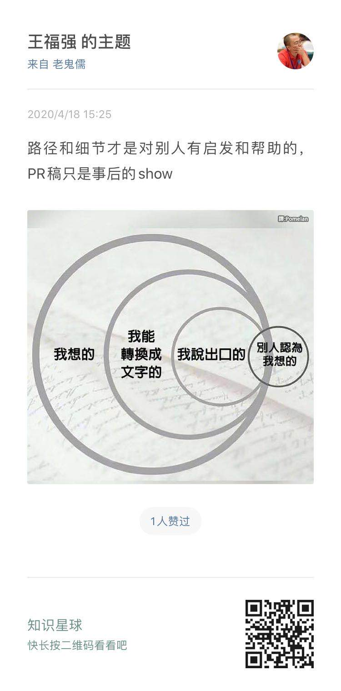
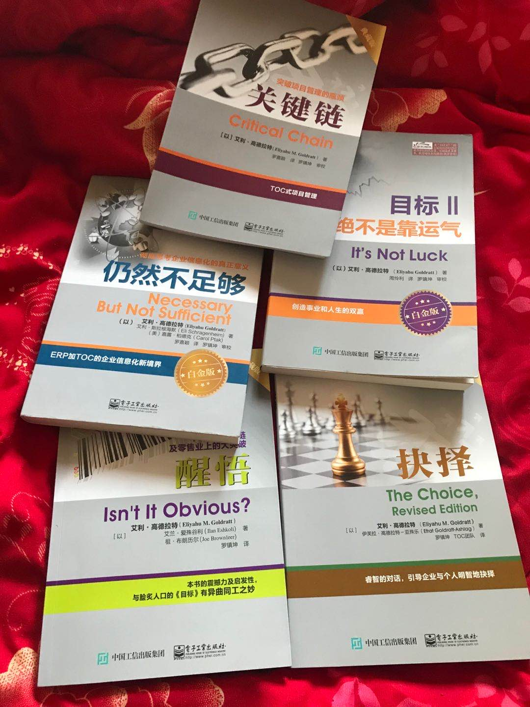

从震南推荐给我一本书开始…
王福强
我就一发不可收拾，把整个高德拉特一个系列里的6本书全都读完了，我也不知道震南当时推荐我第一本《目标》的时候是出于什么初衷，我估计有几个潜在因素：
- 这套书我整体看下来或者《目标》一本书看下来的整体感受就是， 互联网今天的很多思想其实就是来自高德拉特，如果互联网思维有很多本源，那么高德拉特的思想起码是这个本源之一， 从高德拉特做起点到今天，可以看到互联网思想和现状的其中一个发展路径；
- 没有路径和细节， 很多有价值的思想和成功案例，对普通人或者说大部分人来讲，没有任何意义， 只有路径和细节才可以帮助后来者学习和借鉴， 而我， 很多时候会抛给别人一个结论， 自己心里或许跟明镜儿似的，但别人可能会觉得我不知所云；

高德拉特教授这一系列的书有好多本，我只是挑了其中6本读完，第一本《目标》是震南推荐的，也最早读完， 有关感想公众号之前有一篇我已经做过总结就不多说了， 如果要读高德拉特一个系列，这本是必须要读的。
除了目标， 下面是我读的其它五本

分别是：
- 《关键链》// Critical Chain
- 《任然不足够》 // Necessary, But Not Sufficient
- 《目标II - 绝不是靠运气》 // It’s Not Luck
- 《抉择》 // The Choice
- 《醒悟》 // Isn’t It Obvious?
《目标》， 《任然不足够》和《醒悟》这三本我个人读得是比较好的， 其他三本感觉一般，不过或许其他人能读出不一样的东西吧，毕竟书也只是一面镜子。
《任然不足够》我觉得还好是因为它讲的东西跟我的经历相近， 讲得是互联网和软件行业的东西，如果你在这个行业从业有十几二十年的， 估计会更心有戚戚焉吧， 毕竟今天是SaaS的时代，书里的当年是ERP时代。
《醒悟》的好处是，它把一个快消品零售行业给你剖析了个遍， 不是给你个建议或者结果，而是通过故事一步步的带你走过整个零售集团的业务链路和生命周期， 对于今天做电商（以及电商的延伸，包括直播带货）的人来说， 这本书会带你回温那些Good Old Times~
《抉择》有点儿论道的意思(感觉跟我写《深度思考揭秘》1有点儿类似)，虽然是结合了一些商业和咨询案例，但我读得其实没有那么有意思， 或许这些东西本来就没有太大意思吧， 毕竟， “大道易得，小术难求”， 二者矛盾统一，不可分割（瞧， 论道到最后就是这个样子，‘你说得都dei’）
高德拉特教授这一系列书的前言部分都会介绍这一套书里每一本书都是讲什么内容的，我觉得大家如果要看， 完全可以这个做目录地图，然后根据需要挑着看，整个系列泛读下来其实挺耗费时间的， 毕竟疫情也差不多了， 该实干的时候还是实干去吧！
文到最后再次谢谢震南推荐《目标》这本书， 所以才能牵出后面更多的系列内容，也借此回望了下整个互联网的本源和行业里不变的东西。
https://afoo.me/books.html↩︎
「为AI疯狂」星球上，扶墙老师正在和朋友们讨论有趣的AI话题，你要不要⼀起来呀？^-^
这里
- 不但有及时新鲜的AI资讯和深度探讨
- 还分享AI工具、产品方法和商业机会
- 更有原价1000多的付费内容(近500分钟)等着你，加入星球(https://t.zsxq.com/0dI3ZA0sL) 即可免费领取!